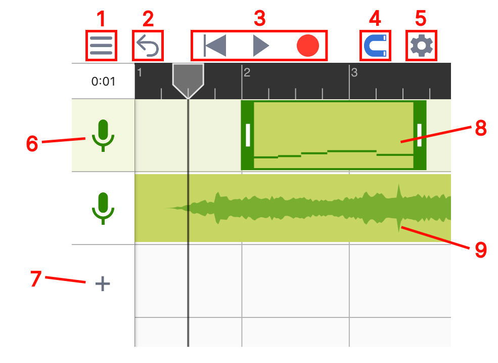
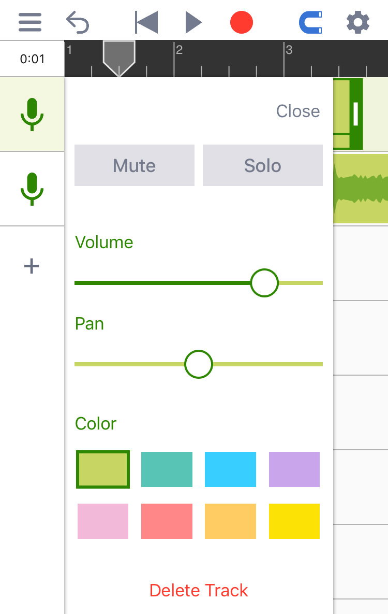
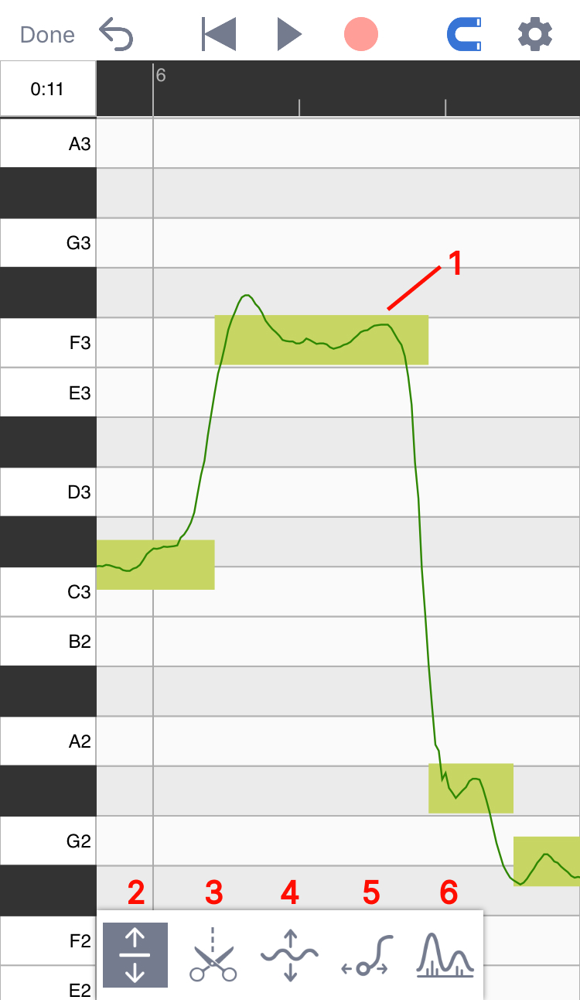
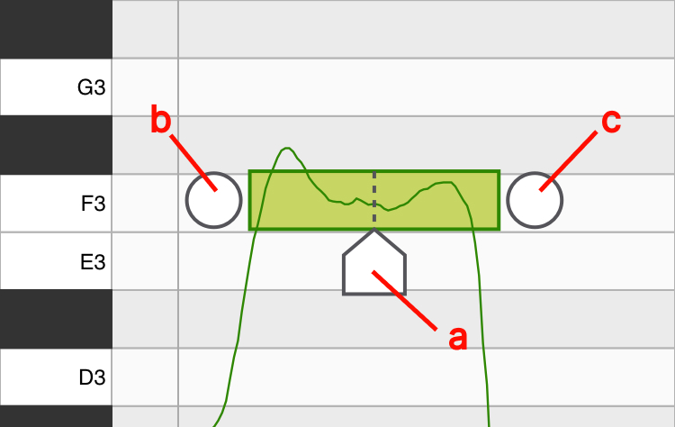
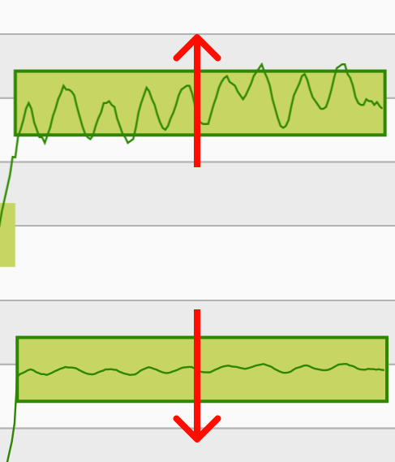
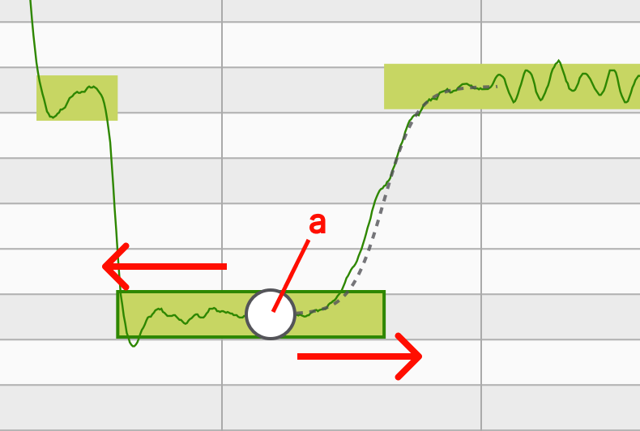
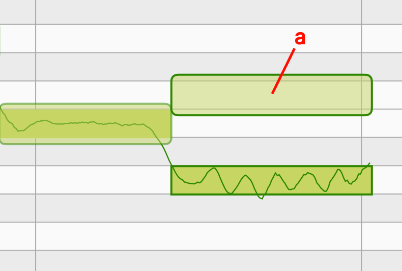

Quick Start Guide
MusicPutty is an advanced note-based pitch editor designed for iOS. The program's algorithm can analyze the pitch information of your vocal takes and give you the ability to edit them note by note. This may sound complicated, but fear not, there are only two main sections in MusicPutty that you need to be aware of. Those are the "Project Window" and the "Pitch Editing Window".
Project Window
The project window is where you can add tracks, record vocal clips and move those clips around across the timeline.

1
Menu: Contains buttons for loading, saving and exporting projects.
2
Undo Button: Use this button to undo any changes you have made to your project. When running on a smaller screen, a redo button will appear when you long-press the undo button; otherwise, the redo button is placed right next to the undo.
3
Cursor Reset, Play and Record.
4
Snap Toggle: Anything you drag will snap to grid once enabled.
5
Settings: Contains controls for metronome, tempo, time signature and live monitoring toggle.
6
Track Icon: Click once to select a track, and twice to open the track's settings panel. Each track's settings panel contains common channel controls such as mute/solo, volume and pan. You can also change the color of a track by clicking on the color picker.

7
Add Track: Click here to add an empty track, import backing tracks or import vocal tracks for analysis and editing. (Note: the ability to import vocal tracks requires pro version subscription)
8
Vocal Clip: Any vocal takes you record will show up in the project window with a miniature view of all the notes inside. You can double-click on it to open the "Pitch Editing Window".
9
Backing Track: Any backing tracks you have imported will show up as plain audio clips.
Pitch Editing Window
The pitch editing window is where you can view and edit all the notes that have been detected inside your vocal clips. To access this page, double-click on any vocal clips you have recorded in the project window.

1
Detected Note: the box shows the rough range of a note, and the line within the box shows the exact pitch at a point in time.
2
Main Tool: With this tool selected, you can drag a note up or down to change its pitch.
3
Note Separation Tool: Use this tool to separate one note into multiple notes or merge multiple notes into one.

3.a
Position Handle: Use this handle to set the position where you want to separate the note. Once in place, you can either click on the handle or drag the handle upward to slice the note in half.
3.b
Merge Button (Left): Click here to merge the selected note with the note on its left.
3.c
Merge Button (Right): Click here to merge the selected note with the note on its right.
4
Vibrato Tool (Pro Feature): Use this tool to change the amount of vibrato you want within each note. Once you have the vibrato tool selected, you can drag upward on a selected note to amplify its vibrato and drag downward to flatten its vibrato.

5
Legato Tool (Pro Feature): A legato handle will appear when you click on a note with the legato tool selected. You can change the speed of the transition between two consecutive notes by dragging on this handle.

5.a
Legato Handle: Drag this handle to the left if you want to make the transition between two notes slower, or drag the handle to the right if you want to make the transition faster.
6
Formant Tool (Pro Feature): You can use this tool to create the popular "chipmunk/monster" vocal effect. Formant is a concept that describes the shape of the frequency spectrum within one's voice. A singer with a larger body size would usually have a deeper voice and a frequency spectrum with energy concentrated on the lower frequency. On the other hand, a signer with a smaller body usually has a brighter voice with energy concentrated on a higher frequency. With the formant tool, you can reshape this distribution of energy across the frequency spectrum and create interesting vocal effects.

6.a
Formant Block: When you have the formant tool selected, a transparent block will appear on top of each note. You can drag this transparent block up or down to change the formant of the note it is associated with.